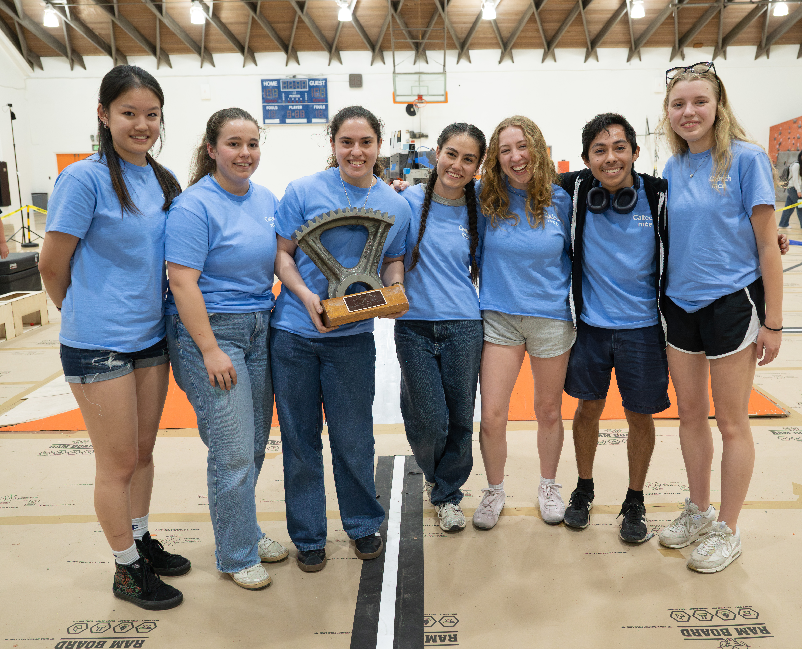
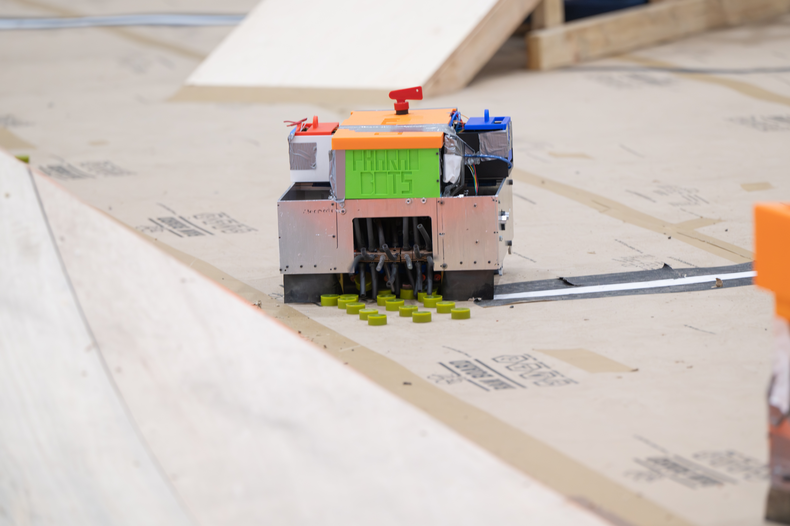
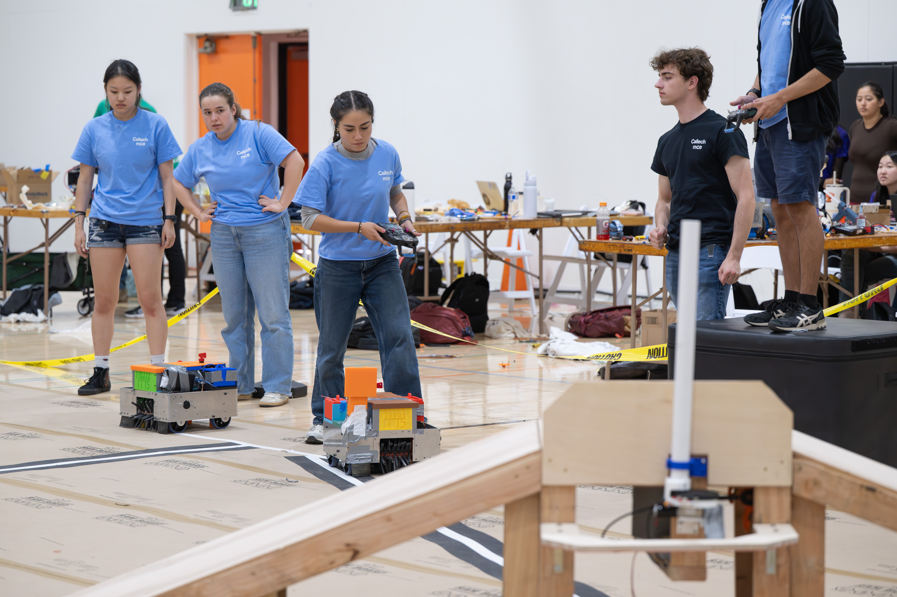
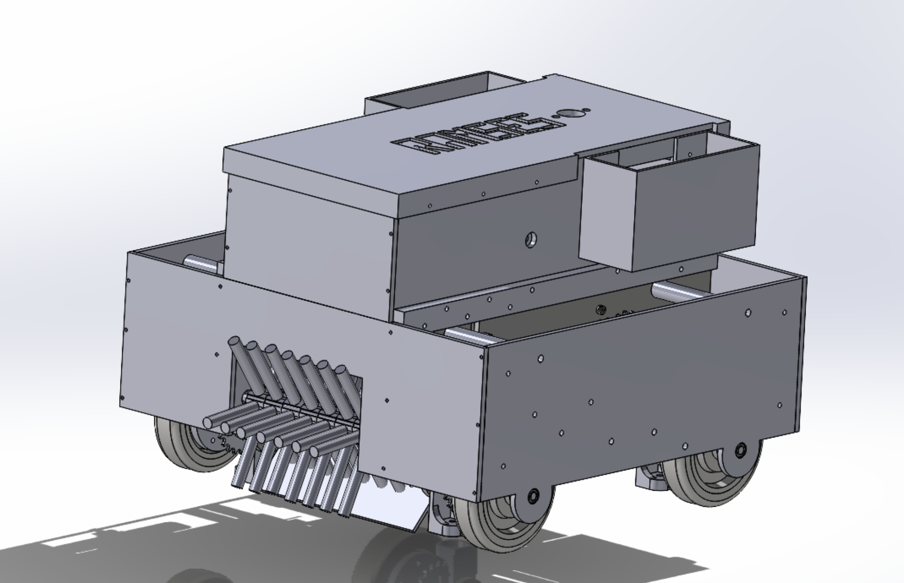
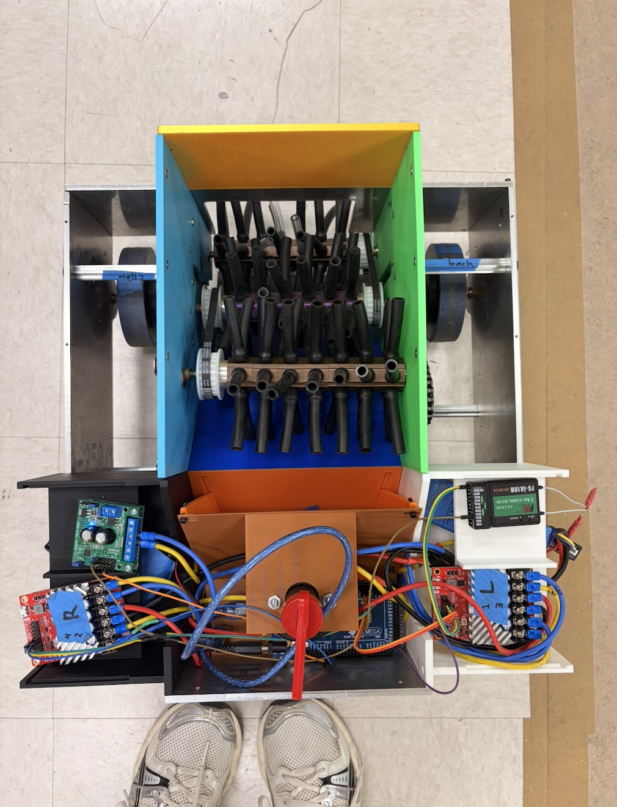
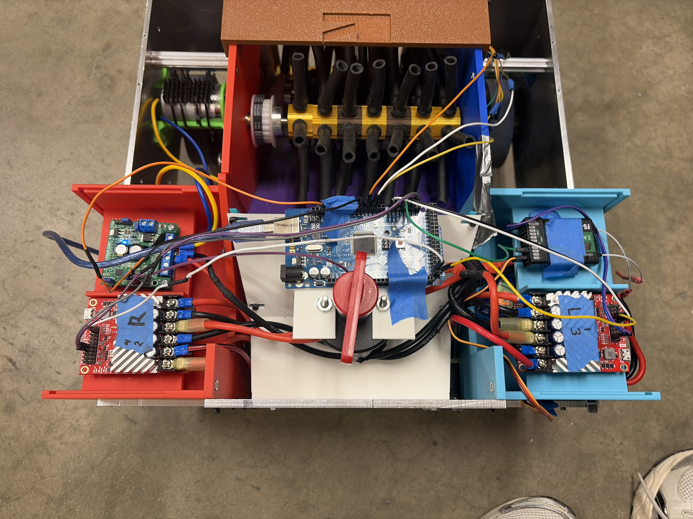
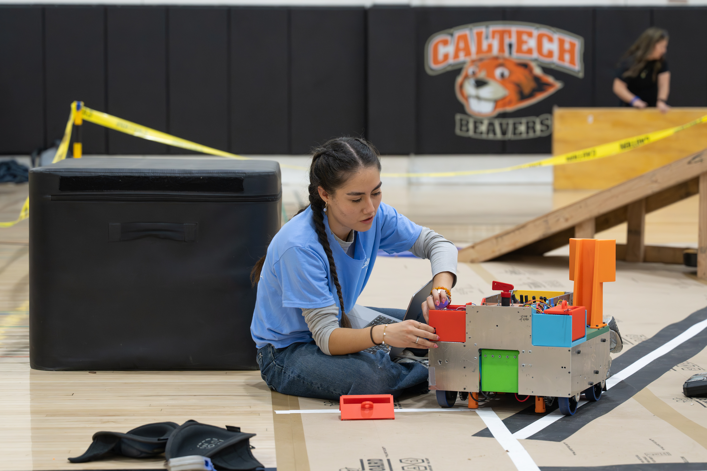

ME 72 Robotics Capstone
Apex Cleanup: Summit, Mint, Bank | Competition Champions
ME 72a/b Engineering Design Laboratory | September 2025 – March 2026



Project Overview
ME 72 is Caltech's two-term mechanical engineering capstone. Over five and a half months, my team ran the full design cycle: requirements, concept generation, design reviews, fabrication, electronics integration, autonomous programming, testing, and iteration. The course ended in a public competition. Our team, the Pharaobots, placed first with the tournament's highest score.
Our team of seven built two competition robots on a limited budget and tight schedule. The robots had to collect objects, climb a steel pyramid, deposit payload at the summit, and hold up under direct contact with other robots.
The Competition
The 2026 challenge, Apex Cleanup: Summit, Mint, Bank, featured a four-foot steel pyramid with 37-degree inclined faces and a narrow summit platform. Robots collected Hot Pellets from the field and delivered them to the summit, converting them into Energy Credits. Credits were banked at ground-level vaults for points. Matches opened with a 30-second autonomous period, then switched to teleop. With multiple robots per field, every design needed traction, stability, structural strength, maneuverability, and impact resistance.
- Two robots per team
- Autonomous and teleoperated play
- Pellet collection, transport, and summit deposition
- Climbing a 37-degree steel incline
- Competing in a crowded, contact-heavy arena
- Strict budget, schedule, size, and weight limits
My Role
Engineering Lead — Fall Term
I served as engineering lead. I organized the design process, tracked progress, coordinated subteams, and kept concepts on track for full robot integration. Fall term's key milestone: finalize the system design and demonstrate a working drivetrain. I reviewed CAD, manufacturing plans, and design decisions to hit that milestone and the critical design review.
Electronics and Autonomy — Winter Term
Winter term, I moved to electronics and took ownership of autonomy. This grew into full electronics work for both robots: wiring, power distribution, motor control, sensors, microcontroller code, debugging, and integration. I programmed and tested the autonomous sequence, then handled electrical and control issues through competition prep.
On competition day, I drove one robot. That meant knowing its handling, limits, and scoring strategy well enough to make fast calls under pressure while coordinating with our second driver.
Engineering Process
- Requirements and strategy: Read the rules, identified scoring opportunities, converted them into engineering requirements.
- Concept generation: Compared drivetrain, intake, climbing, storage, and deposition concepts via sketches, calculations, prototypes, and design reviews.
- Detailed design: Built CAD assemblies and manufacturing drawings — tolerances, fasteners, interfaces, serviceability, DFM.
- Fabrication: Machined parts manually and on CNC, waterjet, laser cutter, and 3D printer.
- Integration: Combined mechanical, electrical, and software systems; fixed issues invisible at the subsystem level.
- Testing and iteration: Repeatedly tested climbing, collection, scoring, autonomy, and durability; revised weak components.
- Competition strategy: Built match plans, driver coordination, repair procedures, spare parts, and troubleshooting workflows.
Project Gallery
CAD, manufacturing, electronics, testing, and competition photos from the build.






Video Demos
Challenges and Lessons Learned
System integration was the biggest challenge. Mechanisms that worked alone often failed on the full robot. Weight distribution affected climbing, mechanical changes affected wiring, electrical noise affected control, and small manufacturing errors caused alignment or reliability issues. Lesson: design interfaces early, test full systems as soon as possible, document changes, and leave time to iterate — don't assume the first design works.
Leading in fall and building electronics in winter gave me both high-level coordination and hands-on execution experience. I learned to trade off under time and budget pressure, communicate across subteams, prioritize by risk, and keep improving a system through unexpected failures.
Competition Result
The Pharaobots won the 41st Annual ME 72 Engineering Design Competition with the tournament's highest score. The win came from months of design, fabrication, debugging, and late-stage iteration. More importantly, it gave me experience taking two robotic systems from concept through a public competition.
Competition Video
Skills and Tools
Mechanical Design: SolidWorks CAD, GD&T, mechanism design, drivetrain design, tolerance analysis, DFM, design reviews, prototyping, and system integration
Manufacturing: Manual mill, lathe, CNC mill, waterjet, laser cutter, 3D printing, drilling, tapping, assembly, and inspection
Electronics and Controls: Arduino programming, autonomous routines, motor controllers, sensors, wiring, soldering, power distribution, battery selection, LiPo battery safety, and electrical troubleshooting
Project Execution: Engineering leadership, task planning, documentation, budgeting, procurement, interdisciplinary teamwork, testing, debugging, competition strategy, and technical communication